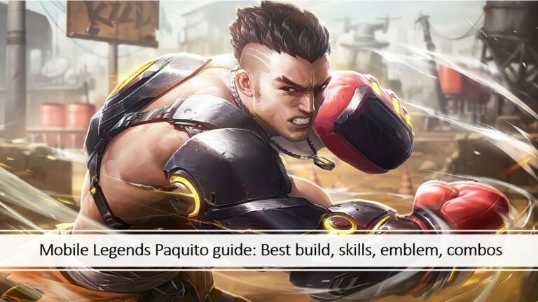

Juara Dunia M5 AP Bren telah resmi mengonfirmasi hero pilihan mereka untuk didesain bersama Moonton Games sebagai penerima skin Juara M5.
Setelah berhasil meraih trofi M-series pada Desember 2023 lalu, tim Filipina diberi kesempatan untuk memilih hero untuk diberikan skin peringatan sebagai hadiah karena memenangkan turnamen Mobile Legends: Bang Bang terbesar tahun ini
Pada tahun 2019, Juara Dunia M1 EVOS Legends memilih Harith untuk menerima skin spesial tersebut. Bren Esports dan Blacklist International memilih Lancelot dan Estes untuk mendapatkan skin juara setelah kemenangan mereka di M2 dan M3
"Pahlawan ini telah membantu tim kami secara konsisten dan pada akhirnya membantu mempertahankan era MLBB di PH. Kami ingin pahlawan ini mewakili keberhasilan tim kami di dalam permainan dan agar para penggemar kami menjadi bagian dari keberhasilan itu dengan memiliki skin dan menikmatinya," tambahnya.
Selain skin Champion M5, Moonton juga mengumumkan bahwa MVP Final M5 David “FlapTzy” Canon akan turut mendesain skin FMVP pertama untuk hero Paquito" .
